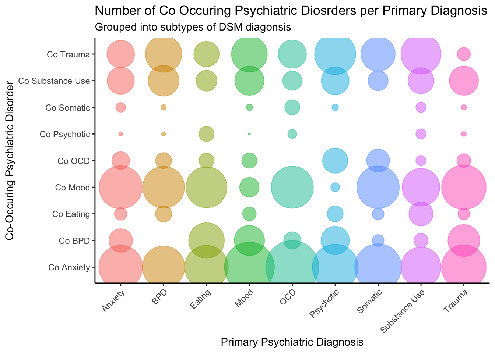
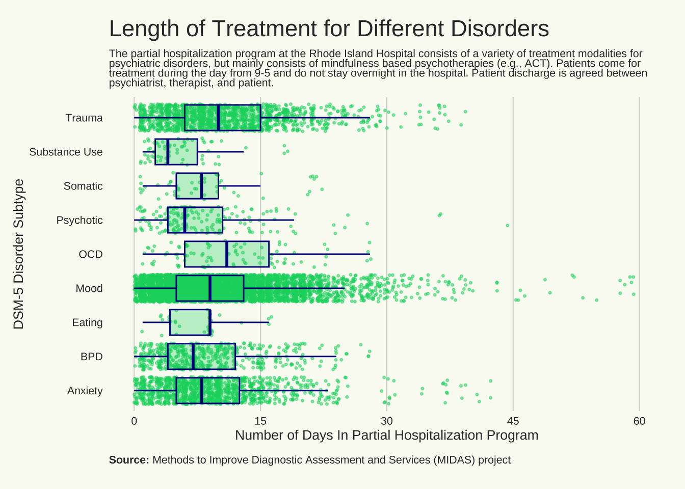

The following code creates visualizations for diagnostic related
information. The main difficulty of these visualizations was getting
diagnostic variables correctly coded so there was not overlap or double
acounting for conditions.
Create Diagnosis Variables
Mothership<-Mothership %>%
mutate(
# Mood Disorders
Mood_D = as.factor(
ifelse(
MDD_P ==1 | Bipolar1_P == 1 | Bipolar2_P == 1 | Dysthymia_P == 1, 1, 0)),
# Anxiety Disorders
Anxiety_D = as.factor(
ifelse(
GAD_P ==1 | Panic_P == 1 | PanicAgor_P == 1 | Agoraphobia_P == 1 |
Social_P == 1 | Specific_P == 1, 1, 0)),
# Obsessive Compusive Disorders
#OCD_P is for current OCD
# Personality Disorders
#BPD_P is for current BPD
# Substance Use Disorders
Substance_D = as.factor(
ifelse(
Alcohol_P == 1 | Drug_P ==1, 1, 0)),
# Trauma or stresor related disorders
Trauma_D = as.factor(
ifelse(PTSD_P == 1 | Adjustment_P ==1, 1,0)),
# Psychotic Disorders
Psychotic_D = as.factor(
ifelse(
Schiz_P == 1 | Schizaff_P == 1,1,0)),
# Eating Disorders
Eating_D = as.factor(
ifelse(
Anorex_P == 1 | Bulim_P == 1 | Binge_P == 1, 1,0)),
# Somatic Disroders
Somatic_D = as.factor(
ifelse(
Somat_P == 1 | UndiffSoma_P == 1| Hypochondriasis_P ==1,
1,0)),
Disorder_Type = as.factor(
ifelse(Anxiety_D == 1, "Anxiety",
ifelse(OCD_P == 1, "OCD",
ifelse(BPD_P == 1, "BPD",
ifelse(Substance_D == 1, "Substance Use",
ifelse(Trauma_D == 1, "Trauma",
ifelse(Mood_D == 1, "Mood",
ifelse(Psychotic_D == 1, "Psychotic",
ifelse(Eating_D == 1, "Eating",
ifelse(Somatic_D == 1, "Somatic", NA
)))))))))),
Anxiety_C = as.factor(
ifelse( GAD_P !=1 & GAD_C ==1 |
Panic_P != 1 & Panic_C == 1 |
PanicAgor_P != 1 & PanicAgor_C == 1 |
Agoraphobia_P != 1 & Agoraphobia_C == 1 |
Social_P != 1 & Social_C == 1 |
Specific_P != 1 & Specific_C == 1, 1, 0)),
Mood_C = as.factor(
ifelse( MDD_P != 1 & MDD_C == 1 |
Bipolar1_P != 1 & Bipolar1_C == 1 |
Bipolar2_P != 1 & Bipolar2_C == 1 |
Dysthymia_P != 1 & Dysthymia_C == 1 , 1, 0)),
Substance_C = as.factor(
ifelse(Alcohol_P != 1 & Alcohol_C == 1 |
Drug_P != 1 & Drug_C ==1, 1, 0)),
Trauma_C = as.factor(
ifelse(PTSD_P != 1 & PTSD_C == 1 |
Adjustment_P != 1 & Adjustment_C ==1, 1,0)),
Psychotic_C = as.factor(
ifelse(Schiz_P != 1 & Schiz_C == 1 |
Schizaff_P != 1 & Schizaff_C == 1,1,0)),
Eating_C = as.factor(
ifelse(Anorex_P != 1 & Anorex_C == 1 |
Bulim_P != 1 & Bulim_C == 1 |
Binge_P != 1 & Binge_C == 1, 1,0)),
Somatic_C = as.factor(
ifelse(Somat_P != 1 & Somat_C == 1 |
UndiffSoma_P != 1 & UndiffSoma_C == 1 |
Hypochondriasis_P != 1 & Hypochondriasis_C == 1, 1,0)),
OCD_Co_C = as.factor(
ifelse(OCD_P != 1 & OCD_C == 1,1,0)),
BPD_Co_C = as.factor(
ifelse(BPD_P != 1 & BPD_C ==1,1,0)),
#emotional disorders
Emotional_dis = as.factor(
ifelse(Anxiety_D == 1 | OCD_P == 1 | Trauma_D == 1 |
Mood_D == 1, "Emotional Disorder", "Other Disorder")),
Co_Anx = as.factor(
ifelse(Anxiety_D == 1 & Mood_C == 1 |
Anxiety_D == 1 & OCD_C == 1 |
Anxiety_D == 1 & BPD_C == 1 |
Anxiety_D == 1 & Substance_C == 1 |
Anxiety_D == 1 & Trauma_C == 1 |
Anxiety_D == 1 & Eating_C ==1 |
Anxiety_D == 1 & Psychotic_C ==1 |
Anxiety_D == 1 & Somatic_C ==1, 1, 0)),
Co_Mood = as.factor(
ifelse(Mood_D == 1 & Anxiety_C == 1 |
Mood_D == 1 & OCD_C == 1 |
Mood_D == 1 & BPD_C == 1 |
Mood_D == 1 & Substance_C == 1 |
Mood_D == 1 & Trauma_C == 1 |
Mood_D == 1 & Eating_C ==1 |
Mood_D == 1 & Psychotic_C ==1 |
Mood_D == 1 & Somatic_C ==1 , 1, 0)),
Co_OCD = as.factor(
ifelse(OCD_C == 1 & Anxiety_C == 1 |
OCD_C == 1 & Mood_C == 1 |
OCD_C == 1 & BPD_C == 1 |
OCD_C == 1 & Substance_C == 1 |
OCD_C == 1 & Trauma_C == 1 |
OCD_C == 1 & Eating_C ==1 |
OCD_C == 1 & Psychotic_C ==1 |
OCD_C == 1 & Somatic_C ==1, 1, 0)),
CO_BPD = as.factor(
ifelse(BPD_C == 1 & Anxiety_C == 1 |
BPD_C == 1 & Mood_C == 1 |
BPD_C == 1 & OCD_C == 1 |
BPD_C == 1 & Substance_C == 1 |
BPD_C == 1 & Trauma_C == 1 |
BPD_C == 1 & Eating_C ==1 |
BPD_C == 1 & Psychotic_C ==1 |
BPD_C == 1 & Somatic_C ==1 , 1, 0)),
CO_Psychotic = as.factor(
ifelse(Psychotic_D == 1 & Mood_C == 1 |
Psychotic_D == 1 & OCD_C == 1 |
Psychotic_D == 1 & BPD_C == 1 |
Psychotic_D == 1 & Substance_C == 1 |
Psychotic_D == 1 & Trauma_C == 1 |
Psychotic_D == 1 & Eating_C ==1 |
Psychotic_D == 1 & Anxiety_C ==1 |
Psychotic_D == 1 & Somatic_C ==1, 1, 0)),
CO_Eating = as.factor(
ifelse(Eating_D == 1 & Mood_C == 1 |
Eating_D == 1 & OCD_C == 1 |
Eating_D == 1 & BPD_C == 1 |
Eating_D == 1 & Substance_C == 1 |
Eating_D == 1 & Trauma_C == 1 |
Eating_D == 1 & Psychotic_C ==1 |
Eating_D == 1 & Anxiety_C ==1 |
Eating_D == 1 & Somatic_C ==1, 1, 0)),
CO_Somatic = as.factor(
ifelse(Somatic_D == 1 & Mood_C == 1 |
Somatic_D == 1 & OCD_C == 1 |
Somatic_D == 1 & BPD_C == 1 |
Somatic_D == 1 & Substance_C == 1 |
Somatic_D == 1 & Trauma_C == 1 |
Somatic_D == 1 & Eating_C ==1 |
Somatic_D == 1 & Anxiety_C ==1 |
Somatic_D == 1 & Psychotic_C ==1, 1, 0)))
##### df for plots
# df without NAs in date and disorder type
Mothership_Diag <- Mothership %>%
filter(!is.na(Disorder_Type))%>%
filter(!is.na(TxYear))
# df with and without depression
No_depressy <- Mothership_Diag %>%
filter(Disorder_Type != "Mood")
view(Mothership)
Number of Disorders Treated Over Time
All Disorders
# Libraries
library(ggplot2)
#install.packages("hrbrthemes")
library(hrbrthemes)
library(dplyr)
library(tidyr)
library(viridis)
# Stacked
ggplot(data=subset(Mothership_Diag, !is.na(Disorder_Type)),
mapping= aes(x=TxYear, y = stat(count),
group=Disorder_Type, fill=Disorder_Type)) +
geom_density(adjust=1.5,alpha=.4,position="fill") +
theme(axis.text.x = element_text(angle = 45,hjust = 1))+
theme(panel.grid.major.y = element_line(color = "grey",size = 0.5,linetype = 2))+
xlab("Treatment Year") +
theme(panel.background=NULL) +
facet_wrap(~Emotional_dis)+
labs(
title = "Type of Disorders Treated at the Hospital Per Year",
subtitle = "Broken Up By Disorder Types") +
xlab("Treatment Year") +
ylab("Percent of Patients With Disorder")
# Broken up by disorder.
ggplot(data=subset(Mothership_Diag, !is.na(Disorder_Type)),
mapping= aes(x=TxYear,y = stat(count),
group=Disorder_Type, fill=Disorder_Type)) +
geom_density(adjust=1.5,alpha=.6) +
facet_wrap(~Disorder_Type)+
theme_classic()+
theme(
panel.grid.major.y = element_line(color = "grey",size = 0.5,linetype = 2),
axis.text.x = element_text(angle = 45,hjust = 1),
legend.position="none",
panel.spacing = unit(0.1, "lines"),
axis.ticks.x=element_blank(),
panel.background=NULL) +
labs(
title = "Type of Disorders Treated at the Hospital Per Year",
subtitle = "Broken Up By Dmotional vs Other Disorders") +
xlab("Treatment Year") +
ylab("Number of Patients With Disorder")
### Excluding Mood Disorders
# without depression
ggplot(data=subset(No_depressy, !is.na(Disorder_Type)),
mapping= aes(x=TxYear,y = stat(count),
group=Disorder_Type, fill=Disorder_Type)) +
geom_density(adjust=1.5,alpha=.6) +
facet_wrap(~Disorder_Type)+
theme_classic()+
theme(
panel.grid.major.y = element_line(color = "grey",size = 0.5,linetype = 2),
axis.text.x = element_text(angle = 45,hjust = 1),
legend.position="none",
panel.spacing = unit(0.1, "lines"),
axis.ticks.x=element_blank(),
panel.background=NULL) +
labs(
title = "Type of Disorders Treated at the Hospital Per Year",
subtitle = "Broken Up By Dmotional vs Other Disorders") +
xlab("Treatment Year") +
ylab("Number of Patients With Disorder")
Amount of Disorder Type Treated
Grouped into DSM chapter subtypes (e.g., Mood Disorder = Major
Depressive Disorder, Bipolar 1 & 2, etc.)
Amount of Primary Diagnoses
# Disorder Type
ggplot(data = subset(Mothership_Diag, !is.na(Disorder_Type)),mapping = aes(x = Disorder_Type, fill=Disorder_Type))+
geom_bar()+
ggtitle("Frequency of Psychiatric Disorder Subtypes") +
theme(axis.text.x = element_text(angle = 45,hjust = 1),
legend.position = "none")+
xlab("Psychiatric Disorder Subtype")+
theme(panel.grid.major.x = element_line(color = "grey",size = 0.5,linetype = 2))+
theme(panel.background=NULL)+
scale_y_continuous(name = "Frequency",limits=c(0,3500))+
coord_flip()
As you can see, the main disorder type in the hospital is mood
realted disorders. This shouldn’t be supprising as many indiviudals with
suicidality (A common hospitalization issue) will meet criteria for a
mood disorder.
Excluding Mood Disorders
# Disorder Type (Without Depression)
ggplot(data = subset(No_depressy, !is.na(Disorder_Type)),mapping = aes(x = Disorder_Type, fill=Disorder_Type))+
geom_bar()+
ggtitle("Frequency of Psychiatric Disorder Subtypes") +
theme(axis.text.x = element_text(angle = 45,hjust = 1),
legend.position = "none")+
xlab("Psychiatric Disorder Subtype")+
theme(panel.grid.major.x = element_line(color = "grey",size = 0.5,linetype = 2))+
theme(panel.background=NULL)+
scale_y_continuous(name = "Frequency",limits=c(0,3500))+
coord_flip()
Number of Co-occuring Disorders
The following visualization looks at the number of disorders people
had, but wasn’t the main reason they attended the hospital, or their
“main” diagnosis.
Mothership_Current_Long <- Mothership %>%
pivot_longer(
cols=c(Anxiety_C, Mood_C, Substance_C, Trauma_C, Psychotic_C, Eating_C, Somatic_C, OCD_Co_C, BPD_Co_C),
names_to = 'Disorder_Present') %>%
filter(value != 0) %>%
select(!value) %>%
filter(!is.na(Disorder_Present))%>%
filter(!is.na(Disorder_Type))
ggplot(data = subset(Mothership_Current_Long, !is.na(Disorder_Present)),mapping = aes(x = Disorder_Present, fill=Disorder_Present))+
geom_bar()+
theme(axis.text.x = element_text(angle = 45,hjust = 1),
legend.position = "none") +
labs(title = "Number of Co Occuring Psychiatric Diosrders",
subtitle = "In Addition to the Primary Diagnosis",
x = "Co-Occuring Psychiatric Disorder") +
scale_x_discrete(labels=c("Trauma_C" = "Trauma",
"Substance_C" = "Substance Use",
"Somatic_C" = "Somatic",
"Psychotic_C" = "Psychotic",
"OCD_Co_C" = "OCD",
"Mood_C" = "Mood",
"Eating_C" = "Eating",
"BPD_Co_C" = "BPD",
"Anxiety_C" = "Anxiety")) +
theme(panel.grid.major.x = element_line(color = "grey",size = 0.5,linetype = 2))+
theme(panel.background=NULL)+
scale_y_continuous(name = "Frequency",limits=c(0,3500))+
coord_flip()
Primary and Co-occuring Disorders.
The following visualization shows which disorders are co-occurring
with which types of primary diagnoses.
library(dplyr)
library(tidyr)
Mothership_Current_Long %>%
ggplot(aes(x = Disorder_Type, y = Disorder_Present, color = Disorder_Type)) +
geom_count(alpha = .5)+
scale_size_area(max_size = 20) +
theme_classic() +
theme(axis.text.x = element_text(angle = 45,hjust = 1),
legend.position = "none") +
scale_y_discrete(labels=c("Trauma_C" = "Co Trauma",
"Substance_C" = "Co Substance Use",
"Somatic_C" = "Co Somatic",
"Psychotic_C" = "Co Psychotic",
"OCD_Co_C" = "Co OCD",
"Mood_C" = "Co Mood",
"Eating_C" = "Co Eating",
"BPD_Co_C" = "Co BPD",
"Anxiety_C" = "Co Anxiety")) +
labs(title = "Number of Co Occuring Psychiatric Diosrders per Primary Diagnosis",
subtitle = "Grouped into subtypes of DSM diagonsis",
y = "Co-Occuring Psychiatric Disorder",
x = "Primary Psychiatric Diagnosis")

Duration of treatment based upon disorder
Source for Data_Vis
library(tidyverse)
#install.packages("showtext")
library(showtext)
# install.packages("camcorder")
library(camcorder)
# install.packages("ggtext")
library(ggtext)
library(glue)
# install.packages("nrbrand")
#require(nrBrand)
#what the fuck is this?
# install.packages("ggmagnify")
#library(ggmagnify)
font_add_google("Fredericka the Great", "fred")
showtext_auto()
# gg_record(
# dir = file.path("~/Desktop/Coding/R working directory/plots/Recording"), # where to save the recording
# device = "png", # device to use to save images
# width = 8, # width of saved image
# height = 6.5, # height of saved image
# units = "in", # units for width and height
# dpi = 300 # dpi to use when saving image
# )
bg_col <- "#F9FBF2"
# highlight_col <- "#FFAD05"
# highlight_col <- "FF52825"
highlight_col <- "#02d46e"
outline_col <- "darkblue"
dark_col <- "#333333"
title = "Length of Treatment for Different Disorders"
st = "The partial hospitalization program at the Rhode Island Hospital consists of a variety of treatment modalities for psychiatric disorders, but mainly consists of mindfulness based psychotherapies (e.g., ACT). Patients come for treatment during the day from 9-5 and do not stay overnight in the hospital. Patient discharge is agreed between psychiatrist, therapist, and patient."
cap = "**Source:**: Methods to Improve Diagnostic Assessment and Services (MIDAS) project <br> "
set.seed(12345)
ggplot(
data = Mothership_Current_Long,
mapping = aes(
x = Days_complete_1,
y = Disorder_Type,
group = Disorder_Type)
)+
geom_jitter(
size = 0.6,
alpha = .5,
colour = highlight_col
)+
geom_boxplot(
outlier.shape = NA,
colour = outline_col,
fill = highlight_col,
alpha = 0.3) +
scale_x_continuous(
breaks = c(0, 15, 30, 45, 60),
limits = c(0.00, 60)
) +
labs(
x = "Number of Days In Partial Hospitalization Program",
y = "DSM-5 Disorder Subtype",
title = title,
subtitle = st,
caption = cap
) +
theme_minimal(
base_size = 30,
base_family = "Commissioner"
) +
theme(
axis.ticks = element_blank(),
panel.grid.minor = element_blank(),
panel.grid.major.y = element_blank(),
panel.grid.major.x = element_line(
linewidth = 0.4,
colour = alpha(dark_col, 0.2),
),
plot.background = element_rect(
fill = bg_col,
colour = bg_col
),
panel.background = element_rect(
fill = bg_col,
colour = bg_col
),
plot.title = element_text(
family = "Commissioner",
#this is the font
margin = margin(b = 20),
colour = dark_col,
size = 70
),
plot.subtitle = element_textbox_simple(
lineheight = 0.55,
colour = dark_col,
family = "Commissioner",
hjust = 0,
margin = margin(b = 20),
halign = 0,
size = 28
),
plot.caption = element_textbox_simple(
lineheight = 0.55,
colour = dark_col,
margin = margin(t = 10)
),
axis.text = element_text(colour = dark_col),
axis.title = element_text(colour = dark_col),
legend.position = "none",
plot.margin = margin(15, 15, 10, 10)
)
